Córtex Estudos · 4º Semestre · Anato Pato II · Aula 11 (19/10)
Patologias da Vulva, Vagina e Colo Uterino
Primeira aula do bloco de saúde da mulher, dedicada ao trato genital inferior. A base é a histologia do colo: endocérvice glandular, ectocérvice pavimentosa e, entre as duas, a junção escamocolunar (JEC) com a zona de transformação, onde o HPV se instala. Sobre essa base vêm as lesões benignas (cisto de Bartholin, cervicites, cisto de Naboth), as neoplasias intraepiteliais cervicais (NIC I, II e III) e o câncer cervical (carcinoma de células escamosas e adenocarcinoma), com carcinogênese pelo HPV, fatores de risco, colposcopia, Papanicolau e o novo rastreamento por DNA-HPV.
🔗 Onde esta aula se encaixa
A aula cobre vulva, vagina e colo. O corpo uterino (endométrio) fica para a próxima aula, junto com mama e ovário. As vulvovaginites foram citadas de passagem, porque são aprofundadas em DIP/ISTs; o foco do hub é o que foi explicado em detalhe: colo do útero e HPV. A carcinogênese pelo HPV retoma a aula de carcinogênese (carcinógenos biológicos).
1 · Anatomia do trato genital feminino e do útero
- Entre a 4ª e a 9ª semana de embriogênese, a fusão dos ductos de Müller forma as tubas, o corpo e o colo uterino. O revestimento do útero, das tubas e a superfície ovariana têm a mesma origem (epitélio mülleriano). Por isso doenças do endométrio, das tubas e do ovário às vezes se parecem entre si.
- Posição fisiológica do útero: anteversoflexão (AVF): inclinado para a frente, com os anexos atrás. A posição do colo e a do útero funcionam como barreira biológica à entrada de ar e da microflora vaginal. O colo também regula o fluxo menstrual e faz parte do canal de parto.
- "Colo" quer dizer pescoço: o colo uterino (cérvice/cérvix) é todo o "pescoço" do útero, não só a parte vista no exame especular.
- Útero de nulípara em idade reprodutiva: ~50 g, ~8 × 6 × 3 cm (~150 cm³, "um saquinho de soro"). Na gestação aumenta até 10 vezes (graças ao miométrio), fica discretamente maior após o puerpério e atrofia após a menopausa.
- Três regiões: fundo, corpo e colo, com o istmo entre corpo e colo.
- Uma massa tumoral no colo pode mudar a posição do útero (menos fletido, retrovertido) e comprimir estruturas vizinhas (reto, bexiga), o que aparece nos exames de imagem e explica sintomas como sangramento, disúria e alteração do hábito intestinal.
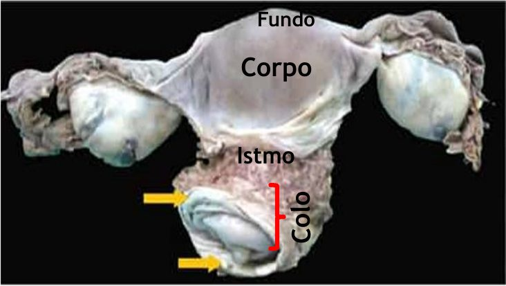
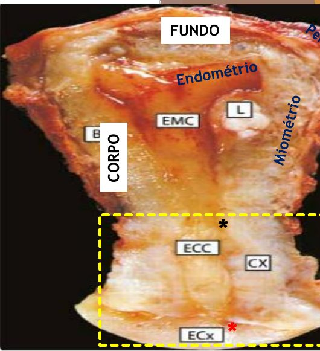
⚠️ Divergência: trato superior × inferior
No slide: trato genital superior (TGS) vai "do colo até o fundo uterino", e o inferior (TGI) é vulva + vagina. Na fala: a aula de hoje é o trato genital inferior, que "engloba o colo uterino, o canal vaginal e a vulva", e o corpo uterino é o trato superior. Na literatura, o trato genital inferior costuma incluir vulva, vagina e colo, como na fala.
⚠️ Divergência: a origem do epitélio mülleriano
No slide: epitélio mülleriano "(ectoderma)". Na literatura: os ductos de Müller derivam do mesoderma (epitélio celômico). O ponto da aula, de que útero, tubas e superfície ovariana compartilham a mesma origem, continua válido.
2 · Vulva e vagina: barreiras, condiloma e sífilis
- A aula não aprofundou as vulvovaginites: a maioria entra em DIP/ISTs. Doenças do trato genital inferior incluem ISTs, inflamações locais, dermatoses vulvares (como o líquen), doenças hormonais, tumores raros e complicações da gravidez.
- Vulva é pele: pode ser acometida por qualquer doença da pele. A maioria das vulvites infecciosas é sexualmente transmitida: tricomoníase, gonorreia, sífilis, micoplasma, clamídia, herpes (HSV) e HPV (condilomas).
- Inflamações recorrentes costumam afetar a vulva e as estruturas perivulvares e podem se estender ao colo e ao corpo, sem envolvimento significativo da vagina.
Por que a vagina quase não adoece sozinha
- Barreira bioquímica e de pH: pH vaginal fisiológico ácido (3,8–4,5), que regula a microbiota.
- A flora é dominada por lactobacilos, que produzem ácido lático e peróxido de hidrogênio (H₂O₂) e mantêm a acidez.
- Anatomia: a curvatura do canal e as pregas mantêm o canal praticamente fechado. Na prática, o que atinge a vagina costuma ser extensão de um processo da vulva ou do colo.
Condiloma acuminado (verruga genital)
- Neoplasia benigna causada pelos HPV de baixo risco 6 e 11 (os mesmos do papiloma).
- Macro e micro: múltiplas lesões exofíticas queratinizadas, tipo "couve-flor", no períneo e na vulva; proliferação da camada de revestimento, como nos papilomas de pele e esôfago.
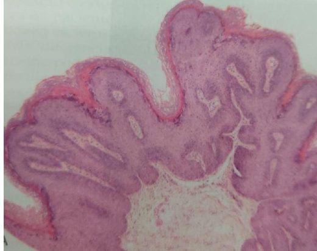
Sífilis primária: cancro duro
- A sífilis voltou a crescer depois que o HIV deixou de assustar, e hoje é tratada como epidemia no Brasil.
- Na fase primária, até 50% das mulheres têm a lesão genital: o cancro duro, úlcera de bordas endurecidas, contorno irregular, que surge ~3 semanas após o contágio e involui em 2 a 6 semanas sem deixar cicatriz. Se a mulher não consulta nesse intervalo, a lesão some e a doença segue silenciosa até a fase secundária/terciária.
- O nome vem da morfologia (lesão endurecida que lembra câncer), mas não é câncer. O cancro pode surgir também no colo, no ânus ou na orofaringe; no lábio, o diferencial com câncer de boca se faz pela idade e pela história de exposição recente.
- Linfonodomegalia acompanha a lesão primária. As lesões das fases secundária e terciária geralmente são extravulvares (a terciária é sobretudo neurológica).
- Diagnóstico: sorologia (VDRL ou teste treponêmico), não biópsia. Ganha relevância na gestação, para tratar e prevenir a transmissão ao feto.
⚠️ Nota sobre o termo "DIP"
O slide chama as doenças do trato genital inferior de "DIPs (doenças inflamatórias pélvicas)". Na literatura, DIP designa a infecção ascendente do trato superior (endometrite, salpingite, abscesso tubo-ovariano). Vulvovaginites e cervicites são infecções do trato inferior, que podem ser a porta de entrada da DIP.
3 · Histologia do colo: endocérvice, ectocérvice e JEC
- O colo tem uma porção interna, o canal endocervical (endocérvice), com epitélio glandular, e uma porção externa, a ectocérvice, exposta ao canal vaginal, com epitélio de revestimento.
- O canal começa no óstio interno e termina no óstio externo, que comunica a cavidade uterina com a vagina. No exame especular e na colposcopia vemos a ectocérvice e o óstio externo; o canal endocervical em geral não é visto.
| Endocérvice (canal endocervical) | Ectocérvice | |
|---|---|---|
| Epitélio | Simples colunar mucossecretor, uma única camada de células cilíndricas, núcleos escuros e basais (semelhante ao endometrial) | Estratificado pavimentoso não queratinizado, com camada basal evidente |
| Arquitetura | Canal sinuoso, cheio de reentrâncias (glândulas/criptas) | Superfície lisa, exposta à vagina |
| Produto | Muco | Glicogênio (células claras nas camadas intermediárias) |
| Apoio | Estroma de conjuntivo denso (lâmina própria) sobre o miométrio | Lâmina própria de conjuntivo denso muito vascularizada |
- JEC (junção escamocolunar) = encontro do epitélio escamoso ectocervical com o colunar endocervical. Fisicamente fica no óstio externo: é a faixa avermelhada, fisiológica, em volta da abertura.
- O epitélio do colo se forma a partir das células basais da região de transição e de células-tronco do estroma, que originam células glandulares ou escamosas sob influência dos hormônios femininos.
O glicogênio da ectocérvice
- A diferença da ectocérvice para a pele não é o tipo celular, é o produto: a pele produz queratina; a ectocérvice produz glicogênio, e por isso as células parecem "brancas" na lâmina.
- Ao descamar, as células liberam o glicogênio, que é substrato para os lactobacilos, que produzem ácido lático e H₂O₂ e mantêm o pH baixo. "Tudo amarrado."
- A partir da menarca, o estrógeno amadurece a mucosa e enche as células de glicogênio. Na pós-menopausa, o epitélio atrofia, produz menos glicogênio e a microbiota se altera.
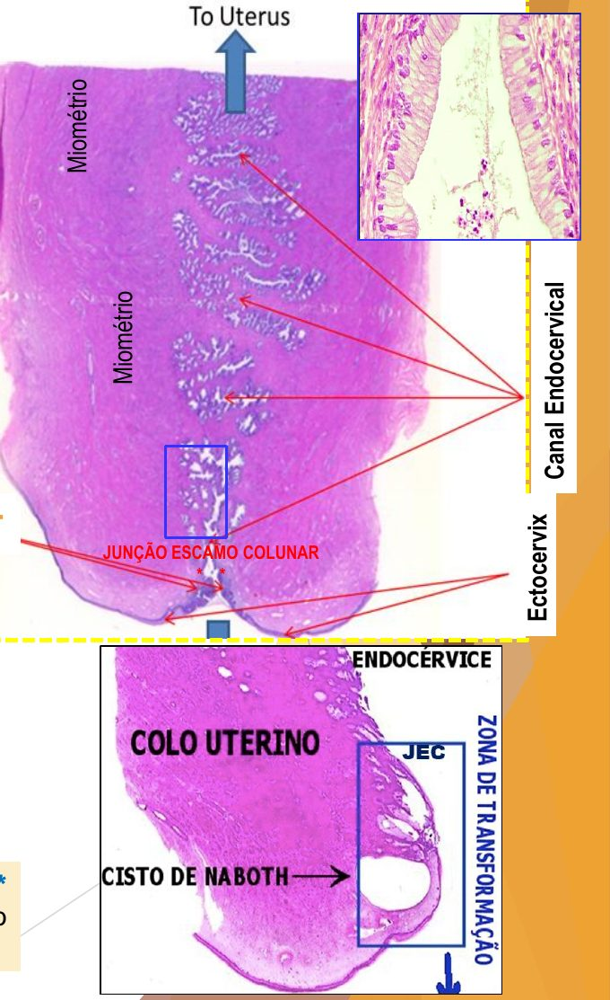
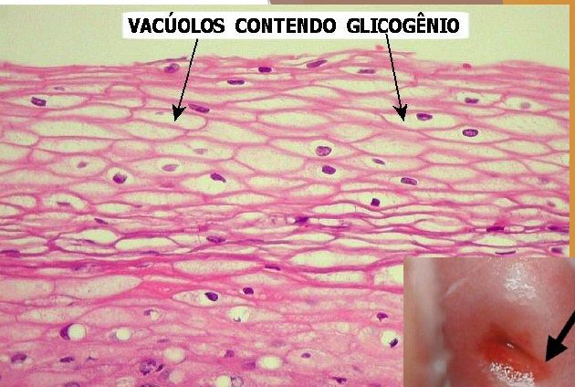
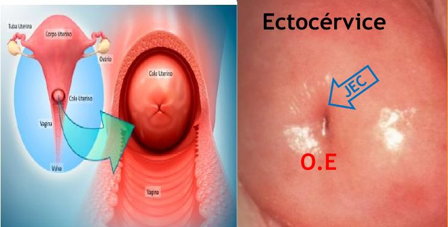
4 · Zona de transformação e o Papanicolau
- Zona de transformação (ZT): faixa de alguns milímetros, logo no início da ectocérvice, em que o epitélio colunar é substituído gradualmente por epitélio escamoso. Vai da última glândula endocervical até a ectocérvice madura e converge para o óstio externo.
- Por quê? O epitélio colunar que fica exposto sai de um meio de pH quase neutro (canal endocervical) para o pH ácido da vagina (~3–4) e, para sobreviver, sofre metaplasia escamosa fisiológica. A ZT é remodelada continuamente.
- A metaplasia produz um epitélio escamoso imaturo, mais suscetível à colonização pelo HPV. É na ZT que o HPV coloniza e onde começa o câncer.
A JEC muda de lugar
- Pré-menarca e menopausa: JEC mais endocervical (para dentro).
- Menacme e uso de anticoncepcional oral (ACO): JEC mais ectocervical (para fora). A exteriorização do epitélio endocervical é chamada de ectopia (ectrópio); o laudo de colposcopia registra quantos milímetros estão expostos.
- Quanto mais epitélio endocervical exposto, mais metaplasia e, em tese, mais suscetibilidade ao HPV. A ação hormonal exógena também desloca a JEC.
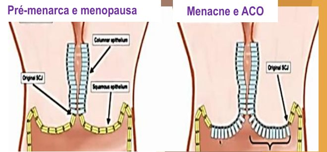
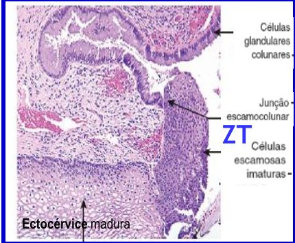
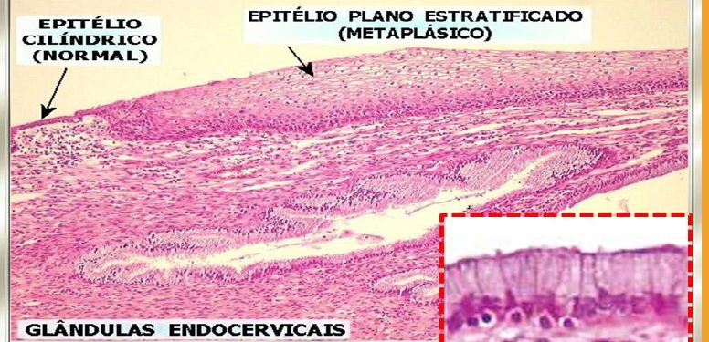
Papanicolau = colpocitologia oncótica
- Nome técnico: colpocitologia oncótica (colpocitopatologia). É citologia, não biópsia: uma esfoliação/raspagem da ectocérvice (espátula) e da junção/canal (escovinha).
- Objetivo principal: colher células da zona de transformação. Um Papanicolau "perfeito" traz células da ectocérvice, da ZT (metaplásicas) e da endocérvice (colunares). A presença de células endocervicais e escamosas indica coleta satisfatória.
- Normal: células superficiais em "lençol", citoplasma amplo e núcleo pequeno, quase picnótico (células maduras, perto de morrer). Células colunares: mais basofílicas, núcleo único polarizado num dos lados.
- O que chama atenção é o núcleo: cariomegalia e hipercromasia nas células superficiais não podem existir. Metaplasia na ZT é fisiológica e, sozinha, não é achado anormal no colo.
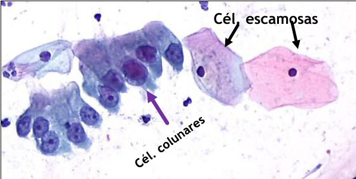
5 · Cisto de Bartholin (bartolinite)
- Glândulas de Bartholin: glândulas vulvares de lubrificação, com saída entre os pequenos lábios.
- Fisiopatogenia: um processo inflamatório/infeccioso (ou trauma, atrito) obstrui o ducto; a secreção não drena, acumula e forma um pseudocisto. A infecção da glândula é uma adenite aguda (bartolinite), que pode evoluir para abscesso doloroso.
- Por que "pseudo"? A cavidade é revestida pelo epitélio da própria glândula/ducto (ductal e/ou metaplásico escamoso), não por um epitélio novo. É o mesmo raciocínio da mucocele do lábio (adenite de glândula salivar com retenção).
- Morfologia: pseudocisto de conteúdo mucoso, até ~3 cm, com dor e desconforto. Comum, em todas as idades, pode recidivar; costuma ser mais percebido em gestantes (fazem mais exames).
- Tratamento: pode regredir espontaneamente. Se persiste: excisão ou drenagem com marsupialização (pontos que mantêm a abertura para formar um novo canal; só drenar e fechar leva à recidiva). Em casos muito recidivantes, remove-se a glândula.
⚠️ Nota sobre o termo "pseudocisto"
O slide e a fala chamam a lesão de pseudocisto "porque o epitélio que contorna o muco é o da própria glândula". Na patologia geral, pseudocisto costuma designar cavidade sem revestimento epitelial, e muitos textos chamam a lesão de cisto do ducto de Bartholin (revestido por epitélio ductal, transicional ou escamoso). O mecanismo, obstrução do ducto com retenção da secreção, é o mesmo nas duas leituras.
6 · Cervicites agudas: infecciosas e inespecíficas
Cervicite = inflamação do colo (não confundir com colite). Dá para dividir em aguda × crônica e em infecciosa × não infecciosa (inespecífica), e as duas divisões se cruzam.
Cervicites infecciosas
- A maioria é inflamação aguda da ectocérvice, com prurido e corrimento (leucorreia).
- Agentes: bacterianos, fúngicos ou virais. Candida (placas leucoplásicas destacáveis, pseudomembrana), clamídia (a mais frequente), gonococo, micoplasma, HSV, CMV.
- O agente é identificado na avaliação microbiológica do Papanicolau ou em culturas; se não for, o quadro fica como inespecífico.
- Fisiopatogenia: o pH ácido (3,8–4,5) pode se tornar alcalino em algumas condições e permitir o crescimento de microrganismos.
- Tratamento: sintomático + identificação do agente e tratamento farmacológico, com orientação de controle da transmissão (abordagem do parceiro) quando é IST. Em geral são autolimitadas.
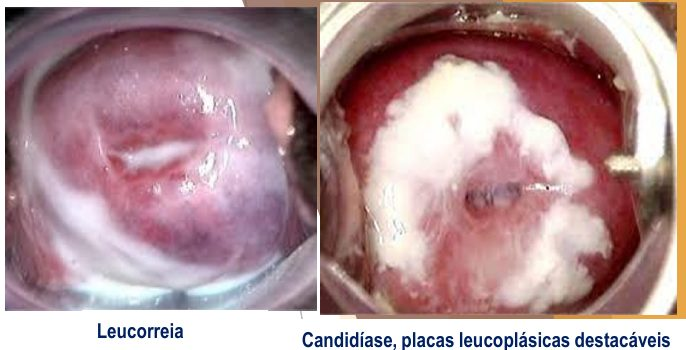
Cervicites inespecíficas (não infecciosas)
- Inflamação sem agente identificado: irritação química, trauma mecânico, alterações hormonais, fatores irritativos locais (ex.: puerpério).
- O pH sobe com menstruação, relação sexual, duchas vaginais e antibióticos. O antibiótico mata os lactobacilos, falta ácido lático e H₂O₂ e o pH não se mantém: na inespecífica o problema às vezes é a falta do microrganismo benéfico, não a proliferação de um agressor.
- A microflora aparece no laudo do citopatológico e pode oscilar mesmo sem infecção.
- O óstio externo costuma ter sinais inflamatórios leves e transitórios (hiperemia, desconforto). Discreta inflamação cervical é comum em todas as mulheres, sem sintomas, e dispensa tratamento (cervicite aguda inespecífica). A cronicidade, porém, deve ser investigada.
🎯 Lendo um laudo de Papanicolau (exemplo da aula)
Amostra convencional, satisfatória; epitélios representados: escamoso, glandular e metaplásico. Avaliação microbiológica: flora lactobacilar sem citólise (normal), pesquisa negativa para fungos, protozoários e alterações virais, moderado número de neutrófilos e hemácias. Conclusão: alterações citológicas reacionais inespecíficas, negativo para células neoplásicas → diagnóstico clínico de cervicite aguda inespecífica. Neutrófilo é marcador de inflamação ativa: a história (relação sexual na véspera, antibiótico recente) costuma explicar.
7 · Cervicites crônicas
- Crônicas inespecíficas: períodos prolongados de quebra do equilíbrio fisiológico (antibiótico frequente, duchas repetidas) → cervicites persistentes, com alterações reparadoras e reativas do epitélio.
- Colposcopia: lesões de vários padrões: áreas eritroplásicas ou leucoplásicas, erosivas e secretivas, localizadas ou difusas, envolvendo o óstio externo e a ectocérvice, com edema.
- Citologia: leucócitos mononucleares e células escamosas com atipias.
- Microscopia (ex.: cervicite ulcerativa crônica simples): áreas erosivas, hiperplásicas e metaplásicas; epitélio descontínuo (erosão/úlcera), com ou sem atipias leves a severas; intenso infiltrado linfoplasmocitário; tecido de granulação e um pouco de fibrose, que indica há quanto tempo o tecido inflama.
- Crônicas específicas: persistência de um agente infeccioso. O agente a investigar é o HPV (qualquer tipo pode manter uma cervicite crônica, porque o vírus coloniza e permanece).
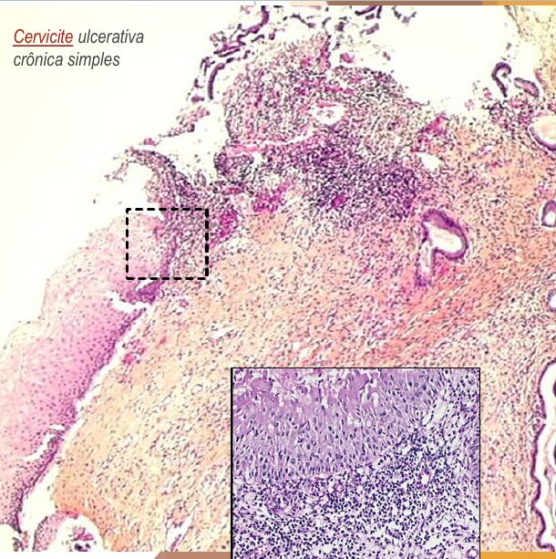
🎯 Conduta na cervicite crônica
Sem atipias: proservação (acompanhamento), com colpocitologia mais frequente (por exemplo, repetir em seis meses) e orientações de coleta. Persistente em exames seguidos ou com células atípicas: investigar HPV oncogênico e NICs, com biópsia. Hoje se usa a PCR para HPV (no mesmo material da citologia ou da biópsia), que importa porque diz qual HPV: se não é 16/18, segue acompanhamento; se é 16/18, a conduta pode ficar mais agressiva.
8 · Cisto de Naboth e pólipo endocervical
- As glândulas mucosas endocervicais (de Naboth) podem ter o ducto bloqueado, em geral pela metaplasia escamosa da ZT, que "tampa" a saída da glândula; o muco fica retido e forma o cisto de Naboth.
- É achado frequente, não necessariamente patológico: a maioria é transitória, regride e não ameaça a saúde. Pode indicar infecção/irritação passada ou recente.
- Mais frequente em mulheres em idade reprodutiva e multíparas.
- Macro: nódulo arredondado e liso, às vezes múltiplo, visto ou palpado no exame. Pode haver vários ao longo do canal; o mais visível é o próximo do óstio externo.
- Em geral não precisa de tratamento; se persiste com queixa, reavalia-se no exame seguinte.
- Diferença para o Bartholin: o Bartholin é vulvar (entre os pequenos lábios); o Naboth fica no colo, junto ao canal endocervical.
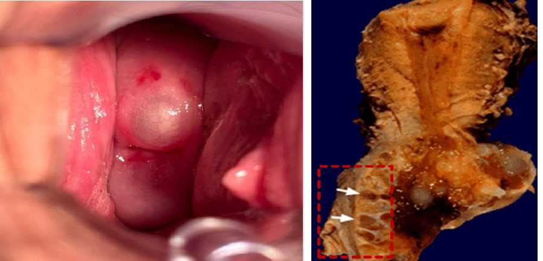
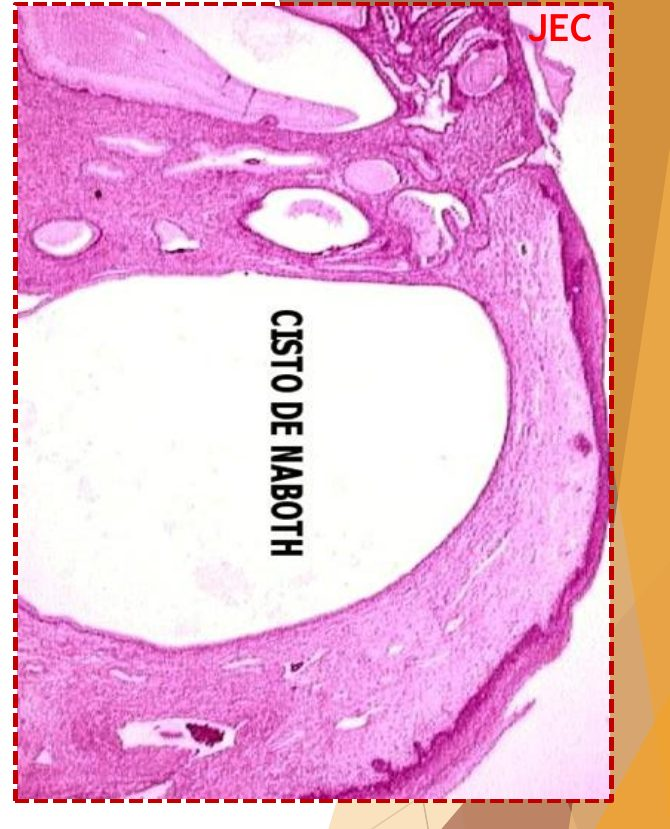
- Pólipo endocervical (comentado de passagem): proliferação do epitélio glandular da endocérvice, que também responde a hormônios. Aparece como lesão avermelhada (cor da endocérvice) saindo pelo óstio, porque não tem espaço para crescer dentro do canal. Não é comum, mas existe, assim como o pólipo endometrial.
9 · NICs: conceito, fisiopatogenia e sistema Bethesda
- Neoplasias intraepiteliais cervicais (NICs), também chamadas lesões intraepiteliais cervicais ou neoplasias pré-malignas: alterações em geral subclínicas que envolvem o epitélio da ZT. Começam como NIC de baixo grau e podem ou não progredir para alto grau.
- "Neoplasia" não é sinônimo de "bolota": a proliferação está instalada, mas ainda retida no epitélio, que mantém sua forma; não há tumor. Ainda assim, já é neoplasia.
- Fisiopatogenia: início e progressão ligados ao HPV, sobretudo aos de alto risco oncogênico (daí a importância de tipificar o vírus). Os fatores de risco das NICs são os mesmos do câncer cervical.
- Pode haver início direto como alto grau, conforme o local da infecção, o subtipo viral e a imunocompetência.
- O HPV coloniza na ZT, mas as lesões aparecem sobretudo na ectocérvice (a endocérvice também pode ser acometida).
- ~80% das pessoas sexualmente ativas, homens e mulheres, entram em contato com o HPV; uma pequena parte faz lesão, e uma parte menor ainda faz câncer. Por isso NIC e câncer de colo são doenças imunodependentes e multifatoriais.
- O HPV também tem tropismo por outras junções de epitélios, como a região anal.
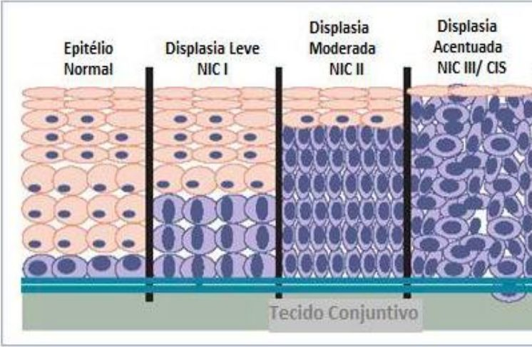
Epidemiologia e macroscopia
- Pico de incidência das NICs: ~30 anos. A progressão leva 5–10 anos para cada etapa, o que dá tempo para o rastreamento.
- Macro: começam como discretas áreas queratóticas (leucoplasias), passam a condilomas planos ou lesões mistas leucoeritroplásicas: os mosaicos (leves a grosseiros: área branca com pontilhado vermelho), às vezes sangrantes.
- Lesões eritroplásicas sugerem mais piora (alto grau) que as leucoplásicas. A NIC em si dificilmente sangra: é alteração de cor, não tumoração.
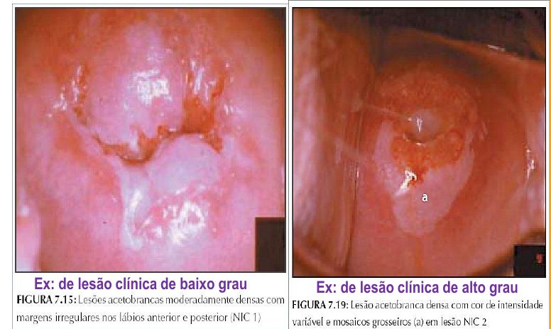
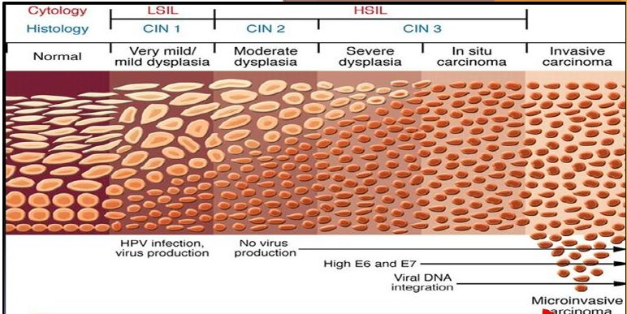
Citologia: o sistema Bethesda
- A colpocitologia detecta precocemente as atipias das células escamosas (ASC, do inglês atypical squamous cells), mas a biópsia é necessária para confirmar. A citologia é método de rastreamento: separa quem precisa de biópsia de quem pode repetir o exame.
| Laudo citológico (Bethesda) | O que significa |
|---|---|
| ASC-US | Células escamosas atípicas de significado indeterminado, possivelmente não neoplásicas: a atipia parece reativa/inflamatória (lembra cervicite). Repete-se o exame. |
| ASC-H | Atipias em que não se pode afastar lesão de alto grau (podem ser NIC I, II ou III) → colposcopia. |
| LSIL (LIBG, lesão intraepitelial de baixo grau) | Inclui a NIC I. |
| HSIL (LIAG, lesão intraepitelial de alto grau) | Inclui NIC II e NIC III; NIC III acentuada ↔ carcinoma in situ. |
| AGC | Atipia de células glandulares (endocervicais): sugere lesão glandular/adenocarcinoma. |
10 · Morfologia das NICs: NIC I, II e III
A classificação definitiva é histológica e se baseia no grau de displasia e nos terços do epitélio comprometidos.
| NIC I (baixo grau, LSIL) | NIC II (alto grau) | NIC III (alto grau, HSIL) | |
|---|---|---|---|
| Extensão | Terço inferior: camadas basal e parabasal | Até o terço médio | Todos os terços |
| Achados | Hiperplasia, coilocitose (halo perinuclear), hipercromasia, atipia leve | Queratinócitos imaturos, atipia moderada de núcleo e célula, cromatina heterogênea, mitoses suprabasais | Hipercromatismo e polimorfismo exacerbados, perda de polaridade, mitoses atípicas e bizarras em todas as camadas, sem coilocitose |
| Significado | Infecção recente, pode ser transitória; vírus abundante (epissomal) | Intermediária; separar de NIC III depende da amostra | Infecção antiga: o DNA viral integrou ao da célula |
- Por que o terço basal primeiro? O HPV entra por microlesões e infecta as células basais e parabasais, a partir das quais se multiplica. Alteração restrita a esse terço indica infecção recente, que o organismo ainda pode eliminar.
- Coilocitose = halo claro em volta do núcleo, reflexo do vírus no citoplasma. Na NIC III ela some porque o vírus já integrou seu DNA ao núcleo: o sistema imune não conseguiu debelar o HPV.
- Na NIC III, a superfície mostra células com núcleo grande, quando o normal seria núcleo pequeno e picnótico.
- Com o tempo, a NIC III acentuada progride para câncer. Enquanto fica confinada ao epitélio, sem invadir a membrana basal, é o carcinoma in situ.
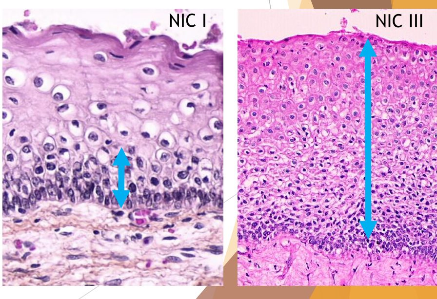
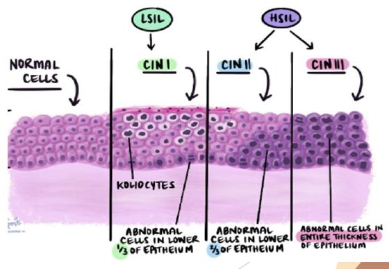
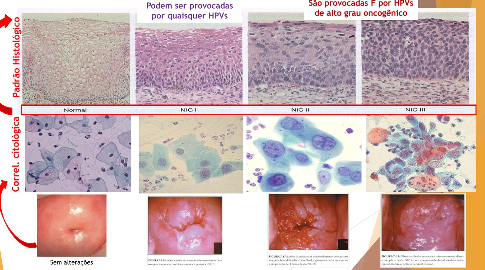
🎯 O raciocínio que a aula pediu
Da clínica para a citologia e para a biópsia: as células do Papanicolau ainda estão em lençol, com núcleo pequeno e iguais entre si? Ou há cariomegalia e hipercromatismo (suspeita de NIC, laudada como ASC/SIL)? Na biópsia: epitélio normal, rico em glicogênio, ou atipia só no terço inferior (NIC I) ou nos três terços (NIC III)?
⚠️ Divergência: a NIC III progride "obrigatoriamente"?
Na aula: a NIC III "obrigatoriamente vai se acentuar e originar o câncer", é fase "irreversível" e por isso já é tratada como carcinoma in situ. Na literatura: a NIC III tem risco alto de progressão (cerca de 30% evoluem para carcinoma invasivo em 30 anos sem tratamento), mas a progressão não é obrigatória, e uma parte regride. O ponto prático é o mesmo: toda NIC III é tratada.
11 · Conduta nas NICs e vacinação contra o HPV
- Toda NIC positiva exige alguma intervenção, mas a intervenção muda com o grau.
- LIBG (NIC I): na maioria, seguimento (repetir o exame). Estima-se que só ~10% das LIBG progridem para LIAG em 2 anos. Em alguns casos, cauterização superficial (eletrocautério/CAF).
- LIAG (NIC II e III): CAF (cirurgia de alta frequência, que remove mais profundamente), biópsia excisional ou conização (quando a margem endocervical não está exteriorizada e visível, retira-se um cone). O colo regenera após a conização. Mais recentemente: ablação por crioterapia e laser.
- Na NIC II em mulheres com 30 anos ou mais e nas lesões recidivantes, a pesquisa molecular de HPV é mandatória, com repetição do exame em 6 meses.
- Pesquisa de HPV: genotipagem por PCR ou captura híbrida; ou imuno-histoquímica de p16 (marcador indireto). Lesão sem HPV → acompanhamento mais longo.
- Em todos os tratamentos: suporte nutricional/imunológico e estilo de vida saudável.
Vacinação
- "Vacina contra o câncer já existe": é a vacina contra o HPV. Ela previne a infecção pelo HPV e o câncer cervical.
- O Ministério da Saúde (PNI) começou a vacinar meninas em 2014 e meninos em 2017. No SUS a vacina é a quadrivalente (HPV 6, 11, 16 e 18); no serviço privado há a nonavalente.
- Deve ser aplicada antes da sexarca (antes do contato com o HPV): é consenso que quem nunca teve relação sexual não corre risco de câncer de colo. Recusar a vacina "porque a criança não tem relações" é justamente perder a janela.
- O sexo seguro reduz o risco de infecção, mas não em 100% (há transmissão por contato com microlesões, inclusive no sexo oral).
- Imunossuprimidos também recebem a vacina (HIV, transplantados, em quimioterapia, LES, doença falciforme). Adultos têm resposta imune parcial.
- A cobertura vacinal de adolescentes ainda não atingiu a meta de 85%.
12 · Câncer cervical: epidemiologia e tipos histológicos
- No Brasil, é o 3º câncer mais prevalente na mulher, atrás de mama e colorretal. Países do norte da Europa praticamente o eliminaram com vacina e rastreamento efetivo; lá o problema passa a ser o câncer de endométrio.
- Incidência média brasileira ~15/100 mil mulheres (mama: ~60/100 mil). A mortalidade em 2020 variou de ~5/100 mil no Sudeste a ~10/100 mil no Norte: depende do acesso ao rastreamento.
- ~95% dos cânceres de colo nascem perto da JEC.
| Tipo | Frequência | Origem e precursor |
|---|---|---|
| Carcinoma de células escamosas (epidermoide) | ~80% | Ectocérvice (epitélio pavimentoso); precursor imediato = lesão intraepitelial de alto grau (NIC III) |
| Adenocarcinoma cervical | ~15% (em aumento) | Células glandulares da endocérvice; mesmas lesões precursoras |
| Outros: adenoescamoso, neuroendócrino (sarcomas, raríssimos) | ~5% | Raros |
Todos os tipos são causados por HPV de alto risco, e quadro clínico e fatores de risco são semelhantes. O nome muda conforme o epitélio que proliferou: HPV na ectocérvice → escamoso; HPV nas células colunares da endocérvice → adenocarcinoma. Os dois podem coexistir.
13 · Carcinogênese pelo HPV e fatores de risco
- O HPV é um vírus de DNA epiteliotrópico, com tropismo por epitélio escamoso. A colonização é facilitada por microlesões (por isso a relação sexual facilita) e depende da virulência.
- 2008: Harald zur Hausen recebeu o Nobel por demonstrar o HPV como causa do câncer cervical. O acompanhamento mostrou que a maioria das lesões desaparecia em 8 a 24 meses; só as persistentes traziam risco de câncer.
- São mais de 200 subtipos, e ~15 de alto risco oncogênico. A maioria das infecções é transitória, eliminada em 8 a 24 meses; o pico de infecção é por volta dos 24 anos.
- O HPV coloniza células imaturas, mas a replicação ocorre nas células maduras.
- No Brasil, estima-se que 80% de homens e mulheres tiveram contato com o HPV, mas só ~20% ficam com infecção persistente.
| Risco | Tipos | Lesões típicas |
|---|---|---|
| Baixo risco | 6 e 11 (também 42, 44 e outros) | Verrugas, condiloma acuminado, papilomas, NIC I; raríssimamente integram o DNA |
| Alto risco | 16 e 18 (~70% dos cânceres); 31, 33, 35, 39, 45, 51, 52, 56, 58, 68 | NIC III, carcinoma in situ e invasivo |
Com o rastreamento e a vacina reduzindo 16/18, outros tipos de alto risco (como o 33) começam a ganhar espaço. Os HPV de alto risco também causam câncer em outros epitélios, como a orofaringe.
O mecanismo
- Adesão: para se prender à célula, o vírus depende de proteínas do capsídeo (na aula, L1 e "L4"). Sem elas, entra em contato mas não consegue se aderir.
- Fase epissomal: o DNA viral, circular, fica no citoplasma/núcleo sem integrar (é a fase da coilocitose). Integrar leva em média ~2 anos.
- Integração: o DNA viral se integra ao do hospedeiro e passa a expressar as oncoproteínas (proteínas transformantes) E6 e E7:
- E6 → liga e degrada a p53: inibe a morte celular (apoptose);
- E7 → liga a pRB: libera o ciclo celular e aumenta a p16INK4a (proliferação).
- p53 e pRB são supressores de tumor: bloqueados, as células proliferam. A proliferação demora a virar tumor porque o epitélio continua descamando.
- Evidência: nos carcinomas, o genoma viral está integrado; nas lesões benignas, está na forma epissomal.
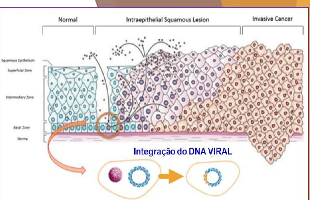
⚠️ Divergência: L1 e "L4"
Na aula/slide: a adesão depende das proteínas virais "L1 e L4". Na literatura: o capsídeo do HPV é formado por L1 e L2 (proteínas tardias); não há uma proteína L4 descrita no HPV. As proteínas precoces E6 e E7 são as oncoproteínas, como dito na aula.
Fatores de risco (doença imunodependente e multifatorial)
Ter HPV de alto risco não basta: é preciso uma resposta imune ineficiente do hospedeiro (por exemplo, anticorpos anti-L1). Pesam a oncogenicidade viral, a resposta imune e os cocarcinógenos.
- Sexarca/coitarca precoce (na aula, antes dos 14 anos): o colo ainda não amadureceu, a junção está exposta e as células imaturas são mais fáceis de colonizar.
- Alta paridade (> 5 gestações): a cada parto, enzimas degradam conjuntivo e epitélio do colo, que se renova; se o HPV estiver presente numa dessas regenerações, coloniza com mais facilidade as células imaturas.
- Múltiplos parceiros e parceiros com múltiplas parceiras: mais chance de contato com algum dos subtipos.
- Tabagismo (nicotina): não age como carcinógeno direto no colo, e sim pela imunossupressão local, que dificulta debelar o HPV.
- Imunossupressão (HIV, lúpus e outras doenças sistêmicas) e certos subtipos de HLA.
- Nunca ter feito rastreamento e ter infecção persistente por HPV de alto risco sem saber: os tumores mais avançados aparecem em mulheres que nunca fizeram o exame. Mito frequente: "casei virgem, não preciso".
14 · Carcinoma escamoso e adenocarcinoma: morfologia
Carcinoma de células escamosas
- Macro/clínica: de pequenas lesões e úlceras superficiais com microinvasão até tumores que circundam todo o orifício e o colo, exofíticos e vegetantes. As lesões iniciais aparecem na colposcopia como áreas brancas (leucoplásicas ou acetobrancas) ou mistas; eritroplásicas persistentes são mais raras.
- Micro: epitélio ectocervical com perda de arquitetura, células hipercromáticas e polimórficas, sem polaridade, sem coilocitose (o vírus já integrou), mitoses atípicas e bizarras em todas as camadas, pérolas córneas, intenso infiltrado inflamatório e neoangiogênese.
- Membrana basal preservada → carcinoma in situ (CIS). Membrana basal infiltrada por ninhos tumorais → carcinoma invasivo.
- Pérolas córneas: queratina formada por disceratose (atipia), onde normalmente não haveria queratina. No carcinoma invasivo, indicam diferenciação e melhor prognóstico; quando o tumor se desdiferencia, elas somem.
- O CIS tem ~90% de cura com excisão com margens (conização, traquelectomia).
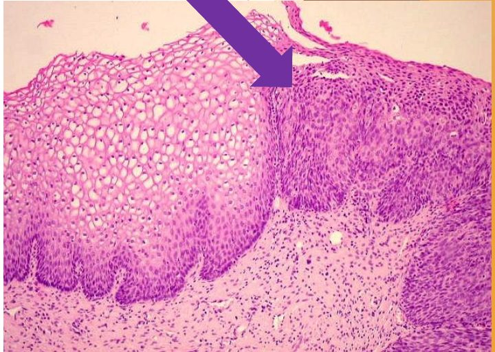
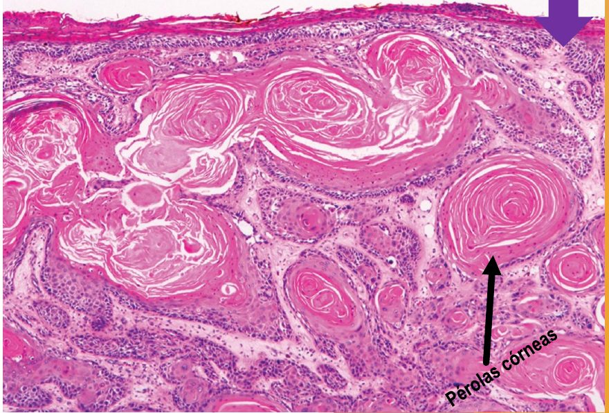
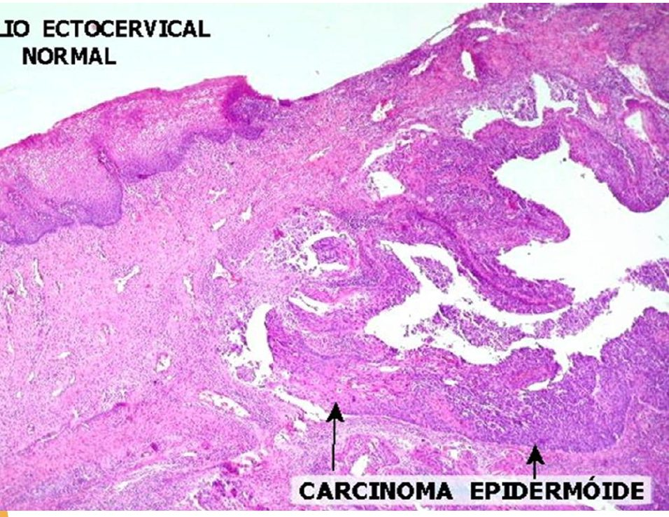
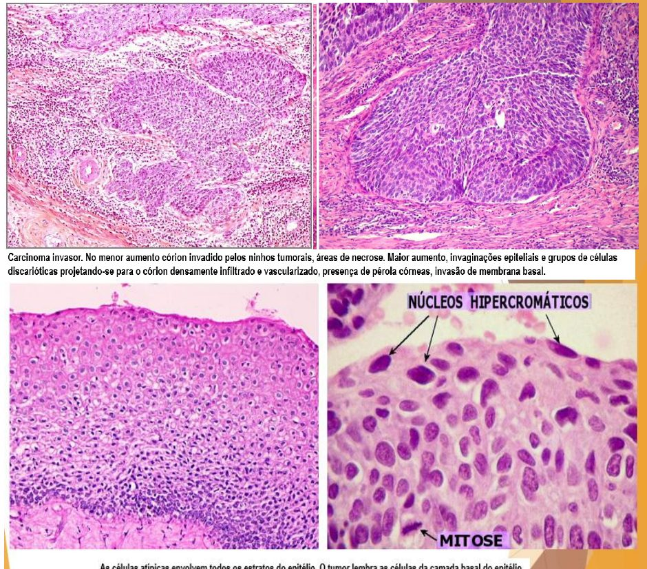
Adenocarcinoma do colo
- Menos frequente que o CEC (~15%), mas vem aumentando. Origina-se das células da endocérvice.
- Comumente associado a lesão escamosa ectocervical de alto grau, mas pode ser isolado: lesão escamosa e glandular coexistem em até 60% dos casos.
- 40–50% dos adenocarcinomas in situ (AIS) também são detectados pela citologia, como células colunares atípicas: nos laudos, AGC (atipia glandular cervical). Grupos de células glandulares grandes e atípicas numa raspagem já são estranhos e sugerem adenocarcinoma; a biópsia confirma.
- Micro: proliferação de células endocervicais atípicas, núcleos grandes e hipercromáticos (centrais ou excêntricos), mucina reduzida, epitélio glandular polimórfico com padrões acinares, estratificado, cuboide a colunar, invadindo gradativamente o conjuntivo.
- Mesma lógica do escamoso: membrana basal preservada → AIS; infiltração da membrana → adenocarcinoma invasivo.
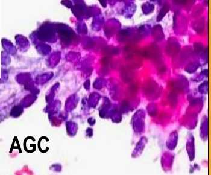
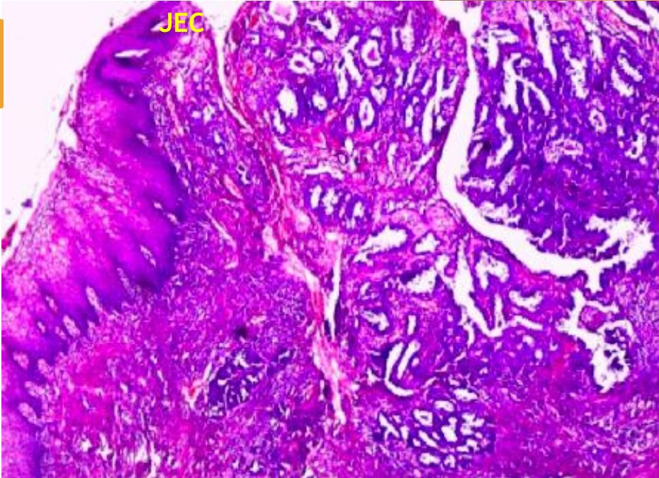
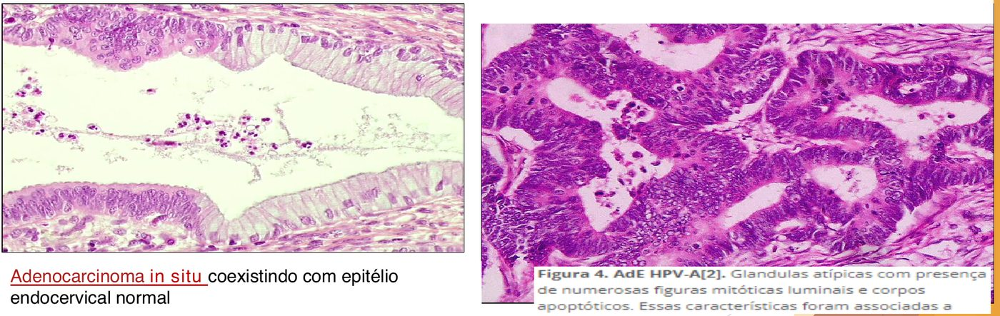
15 · Tratamento, disseminação e quadro avançado
- CIS: tratado como a NIC III: biópsia com margem, cone ou CAF. Lesão pequena com margens livres: tratamento conservador resolve.
- Estádios mais avançados: cirurgia agressiva, traquelectomia (retira todo o colo, preserva o corpo) ou histerectomia (às vezes com anexos), com ou sem esvaziamento linfonodal, + radioterapia e/ou quimioterapia (em alguns casos, braquiterapia). Mulher com prole completa ou tumor grande → histerectomia.
- Metástase: a via principal é a linfática; invasão de capilares linfáticos aparece a partir de ~3 mm de profundidade e aumenta gradativamente. São frequentes as metástases por contiguidade (invasão pélvica).
- Tumor invadindo o estroma → colo "em barril" ao toque; a extensão ao paramétrio simula útero fixo ou em retroversão nos exames de imagem.
- Casos avançados aparecem em mulheres que nunca fizeram o preventivo, percebidos pelos sintomas: dor, sangramento vaginal (inclusive após relação), dispareunia, disúria, tenesmo, perda de peso. Massa grande pode comprimir reto e bexiga.
⚠️ Divergência: 3 mm e o estadiamento
Na aula: "menos de 3 mm é estágio I; a partir de 3 mm já é estágio 2, 3". Na literatura (FIGO 2018): invasão ≤ 3 mm é IA1; > 3 a ≤ 5 mm é IA2; > 5 mm ou lesão visível é IB. Tudo isso ainda é estádio I (restrito ao colo). Estádio II significa extensão além do útero (terço superior da vagina ou paramétrio). O que muda a partir de 3 mm é o risco de invasão linfovascular e de linfonodo, e por isso a cirurgia passa a ser mais ampla.
16 · Colposcopia, p16 e rastreamento
Colposcopia: onde biopsiar
- Citologia alterada → colposcopia para confirmar lesão e fazer biópsia dirigida na área mais representativa. Biópsia às cegas não serve; a dificuldade de acesso à colposcopia é uma barreira ao diagnóstico precoce.
- Exame da mucosa com lente de aumento e iluminação, com dois testes universais:
- Ácido acético: desidrata o epitélio anormal, que fica esbranquiçado (acetobranco): marca o que está alterado.
- Lugol (solução iodada) = teste de Schiller: o iodo tem afinidade pelo glicogênio e cora de marrom-escuro o epitélio normal. A área que não cora (iodo-negativa) não tem glicogênio, logo tem células imaturas ou alteradas. Schiller positivo = área iodo-negativa = área suspeita.
- O laudo descreve vulva, vagina e colo: altura da JEC, ectopia (ex.: 0,5 cm), áreas acetobrancas e iodo-negativas e a suspeita (baixo grau se focal; alto grau se a área não corada é extensa). A biópsia é feita nas horas do relógio mais alteradas, muitas vezes com mais de um fragmento.
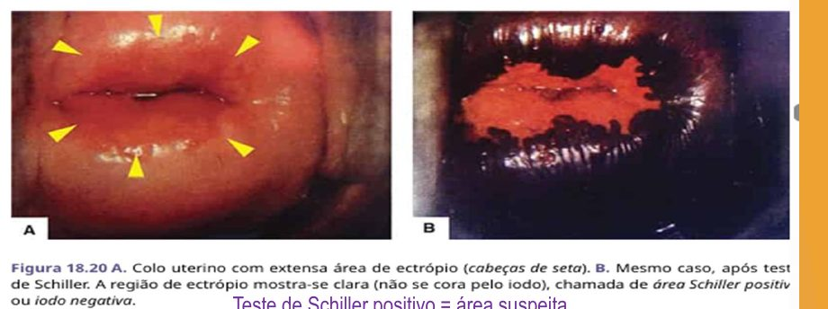
⚠️ Não confundir
Na fala, o teste do ácido acético chegou a ser chamado de "Schiller" e foi corrigido na hora: Schiller é o teste do Lugol (iodo). Ácido acético marca o anormal (fica branco); Lugol cora o normal (rico em glicogênio), e o suspeito é o que não cora.
Imuno-histoquímica para p16
- p16 = marcador de hiperproliferação, marcador indireto do status do HPV (fica "disparado" quando o HPV altera a proliferação, via E7/pRB). Não é proteína do HPV 16; o nome só coincide.
- Uso: biópsia com NIC → p16 diz se há HPV transformante; NIC III + p16 alterado reforça a suspeita de carcinoma; seguimento de novas lesões em mulheres com histórico de câncer. É comum fazer múltiplas biópsias.
- Atualmente, a PCR para HPV é mais precisa. Onde não há PCR, usa-se captura híbrida ou p16.
Rastreamento com Papanicolau
- A colpocitologia oncótica examina células esfoliadas da endo, da ectocérvice e da ZT, após fixação e coloração, em busca de células escamosas ou glandulares atípicas. Em 2005 o INCA publicou a nomenclatura brasileira de laudos e condutas.
- A triagem citológica funciona porque a maioria dos cânceres é precedida por uma lesão pré-cancerosa de longa duração (mais de 5 anos). Para reduzir a mortalidade, o rastreamento organizado precisa de cobertura de 80%.
- Recomendação (MS/INCA, seguindo a OMS): mulheres de 25 a 64 anos, 1×/ano; após dois exames anuais consecutivos normais, a cada 3 anos.
- Problema: muitas mulheres não completam os dois anos seguidos, e quem comparece às campanhas costuma ser sempre o mesmo grupo. Há necessidade de busca ativa de quem nunca fez o exame.
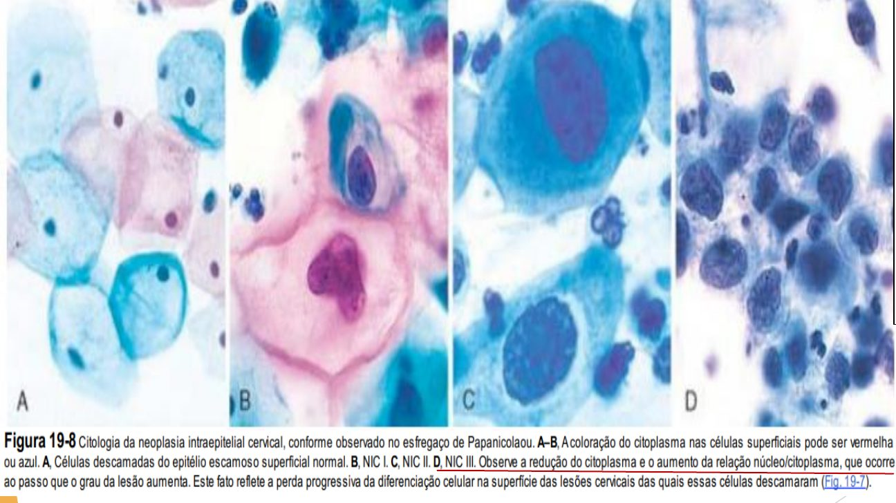
| Citologia alterada (Diretrizes Brasileiras, slide) | Faixa etária | Conduta inicial |
|---|---|---|
| ASC-US (possivelmente não neoplásicas) | < 25 anos 25–29 anos ≥ 30 anos | Repetir em 3 anos Repetir em 12 meses Repetir em 6 meses |
| ASC-H (não se pode afastar alto grau) | — | Colposcopia |
| AGC; células atípicas de origem indefinida | — | Colposcopia |
| LSIL (baixo grau) | < 25 anos ≥ 25 anos | Repetir em 3 anos Repetir em 6 meses |
| HSIL; HSIL sem poder excluir microinvasão; carcinoma escamoso invasor; AIS/adenocarcinoma | — | Colposcopia |
A tabela estava no slide e não foi comentada em detalhe na fala.
⚠️ Nota sobre a cobertura
Slide e fala dizem que a cobertura do rastreamento "não chega a 20%". Inquéritos nacionais (Pesquisa Nacional de Saúde 2019) mostram cobertura autorreferida bem maior, perto de 80% das mulheres de 25 a 64 anos com exame nos últimos 3 anos. O problema real é o rastreamento ser oportunístico e desigual: quem nunca faz o exame continua de fora, e é nesse grupo que aparecem os tumores avançados.
O novo rastreamento no SUS: DNA-HPV
- Rastreamento organizado com teste molecular para DNA-HPV oncogênico (PCR), em mulheres de 25 a 64 anos. Mulheres com sintomas são avaliadas e encaminhadas independentemente do rastreamento.
- HPV não detectado → novo rastreamento em 5 anos (a infecção leva cerca de 2 anos para virar doença, então o intervalo é seguro).
- Positivo para 16 e/ou 18 → colposcopia (e biópsia se houver lesão).
- Positivo para outros tipos oncogênicos (não 16/18) → citologia reflexa: se alterada, colposcopia; se normal, repetir em 1 ano.
- Vantagens: menos falsos negativos e intervalo maior; libera a maioria das mulheres por 5 anos e desafoga a atenção primária. Mulheres imunossuprimidas mantêm intervalo menor: 3 anos se não detectado HPV.
- O Papanicolau continua valendo e continua sendo cobrado: a diferença é que o DNA-HPV negativo libera por 5 anos, e a citologia precisa de dois exames anuais normais para espaçar.
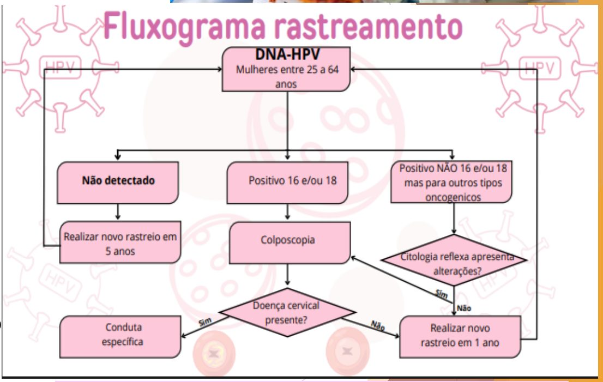
17 · Caso clínico da aula e lâmina de estudo
🎯 Caso discutido em aula
Mulher de 43 anos, ex-tabagista e ex-etilista, filha de mãe soropositiva (protocolo de prevenção no parto, controlada desde o nascimento). Há 2 meses tem pequeno sangramento após relações; no último mês, cólicas, afilamento das fezes e tenesmo. Exame geral normal. Menarca aos 10, sexarca aos 20, parceiro único, 5 gestações. Nunca fez Papanicolau fora do pré-natal, porque "casou virgem". O médico de família pediu colpocitologia e depois colposcopia + biópsia.
- Diagnósticos diferenciais pela clínica: o sangramento e os sintomas compressivos apontam para neoplasia maligna: carcinoma de células escamosas invasivo (compressão do reto) ou in situ; lesões benignas (pólipo) podem entrar na lista. NIC isolada não explica: NIC é alteração de cor e não costuma sangrar nem comprimir.
- Citologia/biópsias: dois fragmentos com lesão intraepitelial escamosa de alto grau (NIC II na posição 3 h e NIC III na posição 9 h): em resumo, LIAG. Alto grau não se repete: vai direto para colposcopia e biópsia. Laudos podem trazer a observação "atipias severas, não exclui carcinoma invasor", que só a histologia resolve.
- Diagnóstico final (anatomopatológico): carcinoma de células escamosas in situ.
- Fatores de risco relevantes: multiparidade (5 gestações), tabagismo e nunca ter feito rastreamento. A mãe soropositiva não é fator de risco da paciente: a imunossupressão teria de estar instalada nela.
Lâmina 64 (caixa clara): carcinoma in situ de colo
- Displasia epitelial em 3/3 do epitélio (NIC III, alto grau): hipercelularidade, perda de polarização e atipias em todos os estratos do epitélio de revestimento, estendendo-se pela superfície até as glândulas endocervicais.
- Neoangiogênese (vasos neoformados). Procurar também o comprometimento glandular e um cisto de Naboth.
- Roteiro de estudo: (1) que tecido é (topografia)? (2) como é esse tecido quando normal? (3) que alterações morfológicas e celulares há na área da lesão? Treine a escrita descritiva.
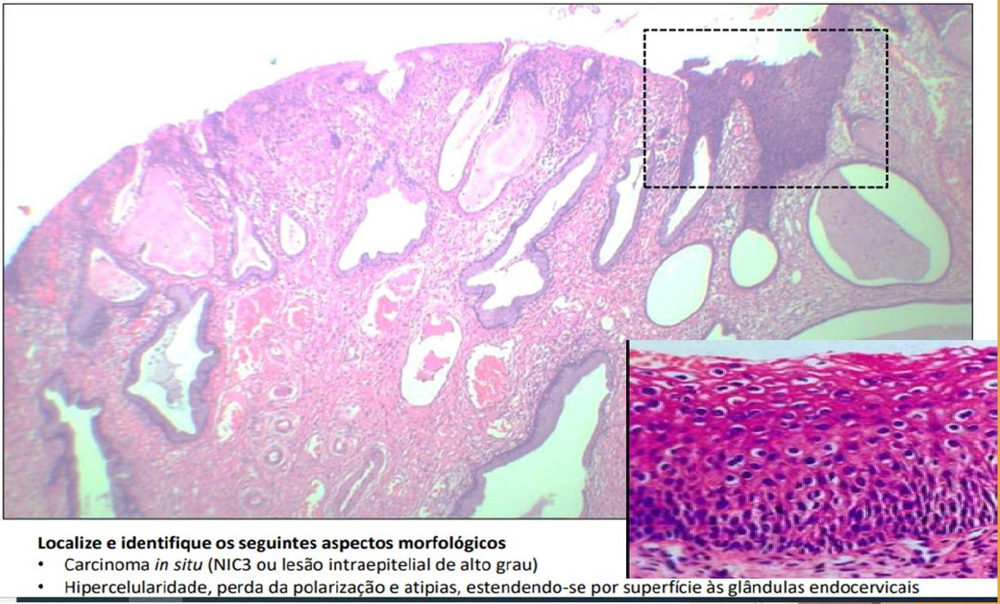
✅ Resumo rápido da aula
- Anatomia: útero AVF, ~50 g / ~150 cm³, aumenta até 10× na gestação · fundo, corpo, istmo, colo · colo = "pescoço" · ductos de Müller (4ª–9ª semana).
- Vulva/vagina: vulva é pele (ISTs, líquen) · vagina protegida por pH 3,8–4,5, lactobacilos (ácido lático + H₂O₂), pregas e curvatura · condiloma = HPV 6/11, couve-flor · cancro duro: 50% das mulheres, ~3 semanas após o contágio, some em 2–6 semanas, diagnóstico sorológico.
- Histologia: endocérvice = colunar simples mucossecretora · ectocérvice = pavimentoso estratificado não queratinizado rico em glicogênio · JEC no óstio externo · ZT = metaplasia escamosa fisiológica, epitélio imaturo, onde o HPV coloniza · JEC para fora na menacme/ACO, para dentro na pré-menarca/menopausa.
- Papanicolau = citologia (não biópsia), quer células da ZT · células endocervicais + escamosas = coleta satisfatória · alarme = cariomegalia e hipercromasia na superfície.
- Bartholin: obstrução do ducto → pseudocisto (epitélio da própria glândula), até 3 cm, marsupialização · Naboth: glândula endocervical tampada pela metaplasia da ZT, achado, sem tratamento.
- Cervicites: infecciosas (Candida, clamídia, gonococo; agudas, tratar agente e parceiro) × inespecíficas (pH sobe com menstruação, sexo, duchas, antibiótico; aguda leve dispensa tratamento) · crônica: erosão, linfoplasmócitos, granulação, fibrose; persistente/atipia → investigar HPV e NIC.
- NIC: pré-maligna, intraepitelial, pico ~30 anos, 5–10 anos por etapa · NIC I = terço basal, coilocitose, infecção recente · NIC II = até o terço médio · NIC III = 3 terços, sem coilocitose (integração) ↔ CIS · Bethesda: ASC-US, ASC-H, LSIL (NIC I), HSIL (NIC II/III), AGC.
- Conduta: NIC I = seguimento (10% progridem em 2 anos) · NIC II/III = CAF, conização, crio/laser · HPV molecular na NIC II ≥ 30 anos · vacina quadrivalente (6, 11, 16, 18) antes da sexarca; meninas 2014, meninos 2017.
- Câncer: 3º na mulher · ~15/100 mil · CEC 80% (ectocérvice), adeno 15% (endocérvice, AGC, lesão escamosa junto em até 60%) · HPV 16/18 = 70% · E6 → p53; E7 → pRB (↑ p16) · epissomal em lesão benigna, integrado no carcinoma.
- Fatores de risco: sexarca precoce, > 5 gestações, múltiplos parceiros, tabagismo (imunossupressão), imunossupressão/HLA, nunca rastrear.
- Morfologia/tratamento: membrana basal íntegra = CIS (cone/CAF, ~90% de cura) · invadiu = invasivo (traquelectomia/histerectomia ± linfonodos + RT/QT) · pérolas córneas = diferenciação, melhor prognóstico · metástase linfática, colo em barril.
- Diagnóstico e rastreamento: ácido acético → acetobranco (anormal) · Schiller (Lugol) positivo = área iodo-negativa · p16 = marcador indireto do HPV · Papanicolau 25–64 anos, anual → trienal após 2 normais · DNA-HPV: negativo → 5 anos; 16/18 → colposcopia; outros → citologia reflexa.
🧫 Resumão Pré-Prova · Vulva, Vagina e Colo Uterino
Revisão da véspera · Anato Pato II · Aula 11 · só o que foi enfatizado
- Útero AVF · nulípara ~50 g, ~150 cm³ · até 10× na gestação (miométrio) · fundo, corpo, istmo, colo (= "pescoço").
- Ductos de Müller (4ª–9ª semana): útero, tubas e superfície ovariana com a mesma origem · ⚠️ slide diz "ectoderma"; literatura: mesoderma.
- Vulva é pele: ISTs, líquen · vagina protegida por pH 3,8–4,5, lactobacilos (ácido lático + H₂O₂), pregas e curvatura.
- Condiloma acuminado = neoplasia benigna por HPV 6 e 11, exofítico, "couve-flor", períneo e vulva.
- Cancro duro (sífilis 1ª): até 50% das mulheres · ~3 semanas após o contágio · some em 2–6 semanas sem cicatriz · diagnóstico sorológico (VDRL/treponêmico), não biópsia · fases 2ª e 3ª extravulvares.
- Endocérvice: colunar simples mucossecretor, canal sinuoso · ectocérvice: pavimentoso estratificado não queratinizado, rico em glicogênio.
- Glicogênio descamado → substrato dos lactobacilos → pH ácido · pós-menopausa: atrofia, menos glicogênio, microbiota alterada.
- JEC no óstio externo (faixa avermelhada fisiológica) · ZT = metaplasia escamosa fisiológica (pH neutro → ácido) → epitélio imaturo → onde o HPV coloniza.
- JEC para fora na menacme e com ACO (ectopia) · para dentro na pré-menarca e menopausa.
- Papanicolau = colpocitologia oncótica = citologia, não biópsia · quer células da ZT · células endocervicais + escamosas = coleta satisfatória · alarme: cariomegalia e hipercromasia nas superficiais.
- Bartholin: ducto obstruído (inflamação/infecção) → pseudocisto mucoso até ~3 cm, revestido pelo epitélio da própria glândula (ductal/metaplásico) · bartolinite/abscesso · recidiva · regressão espontânea, excisão ou marsupialização.
- Naboth: glândula endocervical tampada pela metaplasia da ZT → muco retido · nódulo liso, multíparas · achado, maioria regride, sem tratamento.
- Pólipo endocervical: lesão avermelhada saindo pelo óstio.
- Duas divisões que se cruzam: aguda × crônica e infecciosa × inespecífica.
- Infecciosa: aguda, prurido + leucorreia · Candida (placas destacáveis), clamídia (mais frequente), gonococo, micoplasma, HSV, CMV · tratar o agente + abordar o parceiro.
- Inespecífica: sem agente · pH sobe com menstruação, sexo, duchas, antibiótico (mata lactobacilo) · inflamação discreta é comum e dispensa tratamento; a cronicidade deve ser investigada.
- Laudo: flora lactobacilar = normal · neutrófilos = inflamação ativa · "alterações reacionais inespecíficas, negativo para neoplasia".
- Crônica: eritro/leucoplasias erosivas no óstio e ectocérvice · micro: erosão/úlcera, linfoplasmócitos, tecido de granulação, fibrose, atipias leves a severas · específica = HPV.
- Sem atipia → proservar (citologia mais frequente) · persistente ou com atipia → investigar HPV oncogênico (PCR) e NIC.
- Neoplasia pré-maligna intraepitelial da ZT, geralmente subclínica · HPV (alto risco) · pode começar direto como alto grau.
- Pico ~30 anos · 5–10 anos por etapa → rastreamento · 80% têm contato com HPV, poucos fazem lesão: doença imunodependente e multifatorial.
- Macro: leucoplasias → condilomas planos → mosaicos · eritroplasia sugere alto grau · NIC quase não sangra.
- NIC I: terço basal/parabasal, coilocitose, atipia leve = infecção recente (epissomal).
- NIC II: até o terço médio, atipia moderada, mitoses suprabasais.
- NIC III: os 3 terços, polimorfismo, perda de polaridade, mitoses atípicas em todas as camadas, sem coilocitose (DNA integrado) ↔ CIS (não invade a membrana basal).
- Bethesda: ASC-US (indeterminado, possivelmente reativo) · ASC-H (não exclui alto grau) · LSIL = NIC I · HSIL = NIC II e III · AGC = glandular. Confirmação = biópsia.
- NIC I: seguimento (só ~10% progridem em 2 anos); às vezes cauterização.
- NIC II/III: CAF, biópsia excisional, conização (margem endocervical não visível); crioterapia/laser · colo regenera.
- NIC II em ≥ 30 anos ou recidivante → pesquisa molecular de HPV obrigatória, repetir em 6 meses · PCR, captura híbrida ou p16.
- Vacina no SUS: quadrivalente (6, 11, 16, 18) · meninas 2014, meninos 2017 · antes da sexarca · imunossuprimidos também · nonavalente no privado · cobertura < meta de 85%.
- Preservativo reduz, mas não protege 100%.
- Vírus de DNA epiteliotrópico · entra por microlesões · coloniza células imaturas, replica nas maduras · > 200 tipos, ~15 de alto risco.
- Baixo risco: 6, 11 (condiloma, NIC I) · alto risco: 16 e 18 (~70%), 31, 33, 35, 39, 45, 51, 52, 56, 58, 68.
- Maioria transitória: eliminada em 8–24 meses (pico ~24 anos) · 80% têm contato, ~20% persistem · zur Hausen, Nobel 2008.
- DNA circular epissomal (coilocitose) → integra em ~2 anos → E6 degrada p53 (sem apoptose) · E7 liga pRB (proliferação, ↑ p16) · carcinoma = DNA integrado.
- ⚠️ Adesão: aula cita "L1 e L4"; literatura: capsídeo L1 e L2.
- Fatores de risco: sexarca precoce (< 14 anos na aula) · > 5 gestações (epitélio do colo se renova a cada parto) · múltiplos parceiros · tabagismo (imunossupressão local) · imunossupressão, HLA · nunca ter rastreado.
- 3º câncer da mulher no Brasil · ~15/100 mil · mortalidade ~5 (Sudeste) a ~10/100 mil (Norte) · 95% perto da JEC.
- CEC ~80% (ectocérvice; precursor imediato NIC III) · adenocarcinoma ~15% (endocérvice, em aumento) · 5% adenoescamoso/neuroendócrino.
- CEC micro: perda de arquitetura, hipercromasia, polimorfismo, sem polaridade, sem coilocitose, mitoses atípicas, pérolas córneas, neoangiogênese.
- Membrana basal íntegra = CIS (cone/CAF, ~90% de cura) · infiltrada = invasivo (cirurgia radical).
- Pérolas córneas (disceratose) no invasivo = diferenciação, melhor prognóstico.
- Adeno: lesão escamosa junto em até 60% · AIS detectado na citologia em 40–50% (AGC) · núcleos grandes, mucina reduzida · AIS → invasivo.
- Tratamento avançado: traquelectomia (tira o colo) ou histerectomia ± linfonodos + RT/QT · metástase linfática (risco a partir de ~3 mm) e por contiguidade · colo em barril, útero fixo/retrovertido · sangramento pós-coito, dor, disúria, tenesmo, perda de peso.
- ⚠️ Estadiamento: aula diz "> 3 mm já é estágio maior que I"; FIGO 2018: até 5 mm ainda é IA, e estádio II = além do útero.
- Citologia alterada → colposcopia + biópsia dirigida (vários fragmentos, por hora do relógio).
- Ácido acético: desidrata o epitélio anormal → acetobranco.
- Lugol = Schiller: cora o glicogênio (normal = marrom) · Schiller positivo = área iodo-negativa = suspeita.
- p16 = marcador indireto do HPV (hiperproliferação), não é "proteína do HPV 16" · NIC III + p16 alterado reforça carcinoma · PCR é mais precisa.
- Papanicolau: 25–64 anos, anual → a cada 3 anos após 2 normais · lesão precursora dura > 5 anos · meta de cobertura 80%.
- DNA-HPV (SUS): negativo → 5 anos · 16/18 → colposcopia · outros oncogênicos → citologia reflexa (alterada → colposcopia; normal → 1 ano) · imunossuprimidas: 3 anos.
- Diretrizes (slide): ASC-US < 25 → 3 anos; 25–29 → 12 meses; ≥ 30 → 6 meses · LSIL < 25 → 3 anos; ≥ 25 → 6 meses · ASC-H, AGC, HSIL, carcinoma → colposcopia.
- Bartholin (vulvar, pseudocisto, ducto obstruído) ≠ Naboth (colo, glândula endocervical tampada pela metaplasia).
- Papanicolau (citologia, rastreamento) ≠ biópsia (histologia, diagnóstico definitivo).
- NIC I (coilocitose, terço basal, recente) ≠ NIC III (3 terços, sem coilocitose, DNA integrado).
- ASC-US (possivelmente reativo, repete) ≠ ASC-H (não exclui alto grau, colposcopia).
- CIS (membrana basal íntegra) ≠ invasivo (membrana basal infiltrada).
- CEC (ectocérvice, 80%) ≠ adenocarcinoma (endocérvice, 15%, AGC).
- E6 → p53 ≠ E7 → pRB (↑ p16).
- Ácido acético (branco = anormal) ≠ Lugol/Schiller (não corado = anormal).
- p16 (proteína da célula, marcador indireto) ≠ HPV 16 (tipo viral).
- HPV 6/11 (condiloma, baixo risco) ≠ HPV 16/18 (câncer, alto risco).
- JEC para fora (menacme, ACO) ≠ JEC para dentro (pré-menarca, menopausa).
Banco de Questões — Vulva, Vagina e Colo Uterino
Anato Pato II · Aula 11 · estilo ENADE/residência.